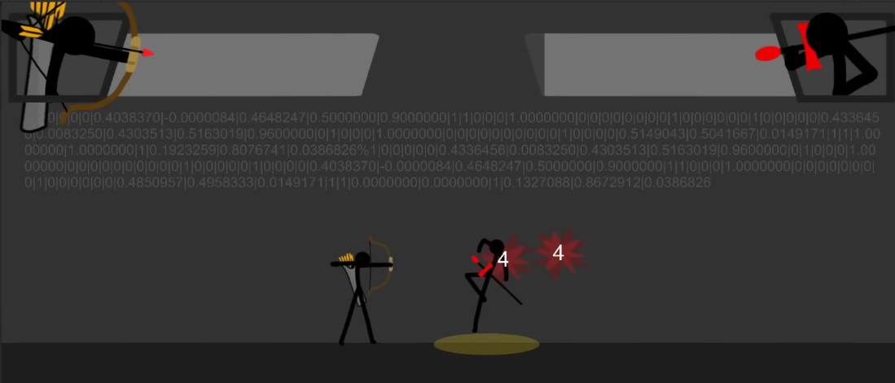
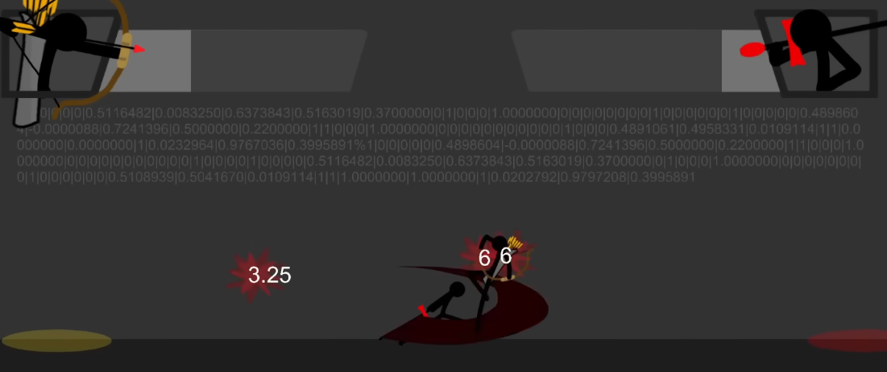
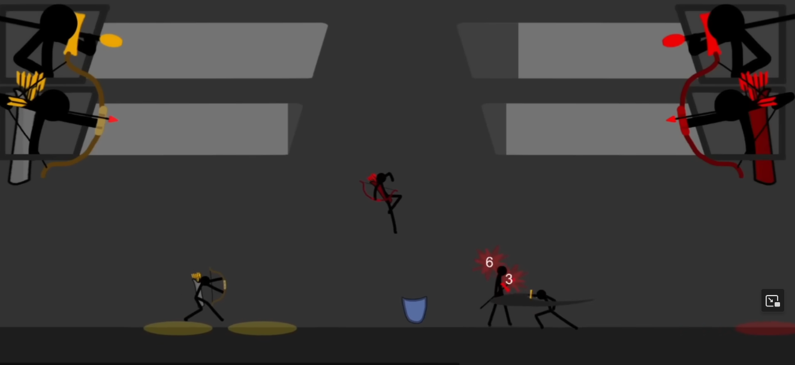
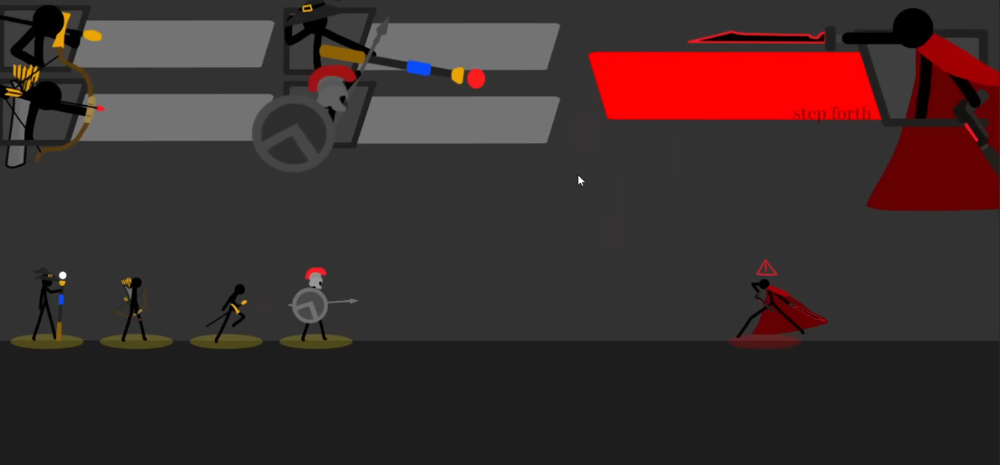
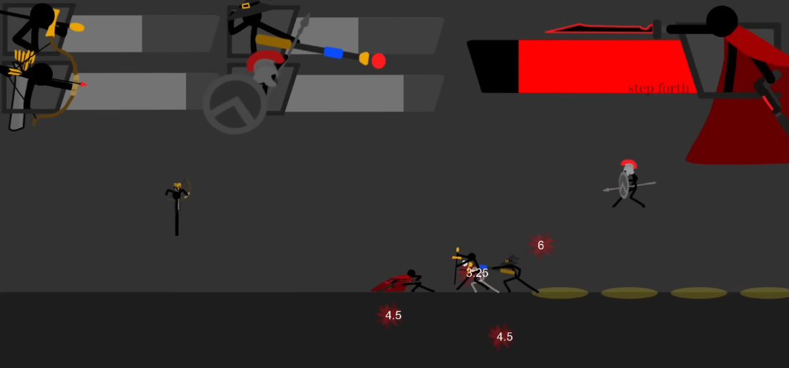
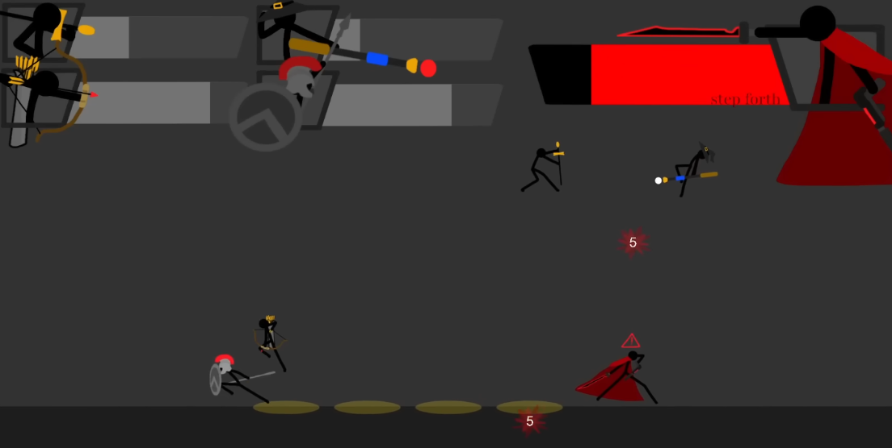

Taught me PPO (and thus MAPPO) implementation where stickfigures with different weapons learn to fight with strategy.
Demonstration PlaylistResources
Discord Inspriation for Video EditingInformation
PPO models control stickfigures with different weapons, stats, etc. to fight in a simulation similar to YOMIH.
1v1, 2v2, 4v1 systems created for the models to train off of. 5 different unit types added so far.
A LOT of reward shaping was used for this project. Like, a lot. Like, more than I usually do. And that's typically a decent amount.
Michael's Description
I LOVE STICKFIGURES.
this project was based on the video game "Your Only Move is Hustle" (YOMIH) which is a strategic game where you control what your stickfigure does every frame
that game was very slow b/c the amount of percision you need to put into your actions, but after doing so the battle would animate itself to become epic!
however, each game took like ehh 20 mins? however, i decided to make 2 ai agents play this. reason? they think instantly, so the battle would play real time
i added 5 different unit types! swordswrath = fast melee, archidon = poke, magikill = zoner + stunlock, spearton = tank
admiral boss combined aspects of all 4! im planning on adding in more bosses and more unit types. (and yes this is based on stick war units)
eventually, i want to make this multiplayer where people train their own ai, fight others online, get currency, and upgrade their training and weapons (somehow)
Visuals
thumbnail for devlog #2 of this project
1v1 mode, swordswrath vs archidon
ditto
2v2 mode
4v1 with admiral boss. starting stances.
4v1 fight.
ditto.